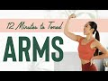
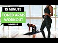

Select a file
Video search
Uploaded

 | 12 Minutes to Toned Arms Workout Welcome to the "12 Minutes to Toned" series!! I'll be releasing a brand new workout for you every week for the next 6 weeks focused on a different area of your body! Today, we are focusing on your upper body and arms, specifically your shoulders, triceps, biceps, chest, back, and traps! I hope this workout helps you find the joy in your movement. I know you will be feeling a sore but so strong once you finish!
Your moves for this workout include: prayer pulses, tricep dips, robot arms, half cobra pushups, walnut crushers, up up down downs and milk jugs. Oh and don't forget to leave a comment if you like the new set!! I'm in love!
Here is where I get all of my music! Epidemic Sound: http://share.epidemicsound.com/sgFTn
My yoga mat is from my shop: http://www.popflexactive.com
******
Cassey Ho is an award-winning fitness instructor, entrepreneur and online personality. As the creator behind Blogilates, the #1 female fitness channel on YouTube, she’s transformed millions of lives through helping them achieve their strength and weight-loss goals. She focuses on making fitness fun and the results are evident. Cassey's unique format, POP Pilates©, which launched as a workout video on YouTube in 2009, has become a live fitness class that can be taken at gyms all over the world with over 3,000 POP Pilates classes being taught monthly. Her authenticity continues to shine through, making her one of the most relatable fitness icons online and beyond. She's also the author of the best-selling book, Hot Body Year Round and is the designer of her own activewear line, POPFLEX.
With a wide range of free workout videos available, Cassey's channel focuses on ab exercises, butt & thigh exercises, arm exercises, pilates, cardio routines, fat burning workouts, high intensity interval training workouts (HIIT), stretching and flexibility routines and so much more!
***
DISCLAIMER:
Blogilates and oGorgeous Inc. strongly recommend that you consult with your physician before beginning any exercise program.
You should be in good physical condition and be able to participate in the exercise.
You should understand that when participating in any exercise or exercise program, there is the possibility of physical injury. If you engage in this exercise or exercise program, you agree that you do so at your own risk, are voluntarily participating in these activities, assume all risk of injury to yourself, and agree to release and discharge Blogilates and oGorgeous Inc. from any and all claims or causes of action, known or unknown, arising out of Blogilates' and oGorgeous Inc.'s negligence. 16 min - 20 Jan 2020 |
10 MIN TONED ARMS - quick & intense at home / with water bottles I Pamela Reif TIP: fill up your bottles as FULL AS POSSIBLE. If there’s air in the bottle, the water will move from side to side - which is a little annoying. / Werbung
I know, training Booty & Abs is our favorite. But don’t neglect your arms! Toned arms, that fit to the rest of your beautiful body. Strong arms, that have enough strength to hold you during a Plank Workouts (haha!).
No huge, masculine biceps - but also no flabby bingo wings. This workout will NOT make your arm muscles grow big + bulky. It will just make them more defined :) This is a super fun routine, which seems easy at first .. but it will make your arms BURN, I promise.
Aaaand I also love the music in this video. Feeling the burn is definitely easier when we can sing along!
_
▸ you can find FREE WORKOUT PLANS on my Instagram Channel. 30min, 45min and Beginner Friendly combinations. Check out the Highlight Bubble "Workout Plans" for that.
➞ Instagram http://www.instagram.com/pamela_rf/
__
▸ I update my workout playlist weekly & it's available on Spotify, Apple Music, etc. ♥︎
http://wmg.click/GetActive
1. Shed a Light - Robin Schulz feat. David Guetta, Cheat Codes 0:00-03:05
2. Sugar - Robin Schulz feat. Francesco Yates 03:06-06:33
3. Sun Goes Down - Robin Schulz feat. Jasmine Thompson 06:34-08:12
4. All This Love - Robin Schulz feat. Harloe 08:13-11:12
__
➞ Instagram http://www.instagram.com/pamela_rf/
➞ Food Account http://www.instagram.com/pamgoesnuts/
__
Business Contact:
pamela_reif@icloud.com
__
unterstützt durch Warner Music Germany
Disclaimer:
When joining me for this workout video, you need to take some precautions as your health and safety is the most important. To avoid any injury or harm, you need to check your health with your doctor before exercising. By performing any fitness exercises without supervision like with this video, you are performing them at your own risk. See a fitness professional to give you advice on your exercise form. Pamela Reif will not be responsible or liable for any injury or harm you sustain as a result of this video. 11 min - 17 Apr 2020 |
12 Minutes to Toned Total Body Workout Are you one of those types of people who only has a few minutes a day to work out and STILL can't choose between arms, butt or legs?! It's ok, me too sometimes. That's why today's 12 Minutes to Toned workout is gonna target the whole body. We're gonna get a lot done in a short amount of time!!!
The moves are narrow squats, back behind leg lifts (right), back behind leg lifts (left), straight leg heel lift (right), straight leg heel lift (left), push up dogs & star abs!
Here is where I get all of my music! Epidemic Sound: http://share.epidemicsound.com/sgFTn
My outfit & yoga mat are from: http://www.popflexactive.com
******
Cassey Ho is an award-winning fitness instructor, entrepreneur and online personality. As the creator behind Blogilates, the #1 female fitness channel on YouTube, she’s transformed millions of lives through helping them achieve their strength and weight-loss goals. She focuses on making fitness fun and the results are evident. Cassey's unique format, POP Pilates©, which launched as a workout video on YouTube in 2009, has become a live fitness class that can be taken at gyms all over the world with over 3,000 POP Pilates classes being taught monthly. Her authenticity continues to shine through, making her one of the most relatable fitness icons online and beyond. She's also the author of the best-selling book, Hot Body Year Round and is the designer of her own activewear line, POPFLEX.
With a wide range of free workout videos available, Cassey's channel focuses on ab exercises, butt & thigh exercises, arm exercises, pilates, cardio routines, fat burning workouts, high intensity interval training workouts (HIIT), stretching and flexibility routines and so much more!
***
DISCLAIMER:
Blogilates and oGorgeous Inc. strongly recommend that you consult with your physician before beginning any exercise program.
You should be in good physical condition and be able to participate in the exercise.
You should understand that when participating in any exercise or exercise program, there is the possibility of physical injury. If you engage in this exercise or exercise program, you agree that you do so at your own risk, are voluntarily participating in these activities, assume all risk of injury to yourself, and agree to release and discharge Blogilates and oGorgeous Inc. from any and all claims or causes of action, known or unknown, arising out of Blogilates' and oGorgeous Inc.'s negligence. 15 min - 9 Feb 2020 |
12 Minutes to Toned Thighs Workout Today, we're focusing on our thighs, so get ready for some intense inner thigh, outer thigh & quad action!! Your moves are leg swings (right), passé & drag (right), passé up and down (right), leg swings (left), passé & drag (left), passé up and down (left), plié in relevé, sideways scissors & froggers!
Here is where I get all of my music! Epidemic Sound: http://share.epidemicsound.com/sgFTn
My yoga mat is from: http://www.popflexactive.com
******
Cassey Ho is an award-winning fitness instructor, entrepreneur and online personality. As the creator behind Blogilates, the #1 female fitness channel on YouTube, she’s transformed millions of lives through helping them achieve their strength and weight-loss goals. She focuses on making fitness fun and the results are evident. Cassey's unique format, POP Pilates©, which launched as a workout video on YouTube in 2009, has become a live fitness class that can be taken at gyms all over the world with over 4,000 POP Pilates classes being taught monthly. Her authenticity continues to shine through, making her one of the most relatable fitness icons online and beyond. She's also the author of the best-selling book, Hot Body Year Round and is the designer of her own activewear line, POPFLEX.
With a wide range of free workout videos available, Cassey's channel focuses on ab exercises, butt & thigh exercises, arm exercises, pilates, cardio routines, fat burning workouts, high intensity interval training workouts (HIIT), stretching and flexibility routines and so much more!
***
DISCLAIMER:
Blogilates and oGorgeous Inc. strongly recommend that you consult with your physician before beginning any exercise program.
You should be in good physical condition and be able to participate in the exercise.
You should understand that when participating in any exercise or exercise program, there is the possibility of physical injury. If you engage in this exercise or exercise program, you agree that you do so at your own risk, are voluntarily participating in these activities, assume all risk of injury to yourself, and agree to release and discharge Blogilates and oGorgeous Inc. from any and all claims or causes of action, known or unknown, arising out of Blogilates' and oGorgeous Inc.'s negligence. 15 min - 26 Jan 2020 |
.jpg) | 10 Minute Arm Toner | Total Body Transformation Workout You guys, today's Total Body Transformation arm workout is gonna be your BIGGEST CHALLENGE YET!!! That's because we're doing this with weights. YUP. If you don't have weights, you can also do this workout without them, but I want you to push yourself a little harder today and find 2 equally weighted water bottles, books, or anything you can grab!!!
You have 8 arm moves today, starting with a shoulder burn, then moving to triceps, with a little bit of biceps at the end. We'll do each for 1 minute with a 15 second break in between. They are:
1. Front Raise
2. Side Raise
3. Elevated Bicep Curl
4. Tricep Kickbacks
5. Overhead triceps
6. Upright Row
7. Bicep Curl to Shoulder Press
8. Shoulder Press Pulses
Workout starts at 2:42!
Here is where I get all of my music! Epidemic Sound: http://share.epidemicsound.com/sgFTn
Yoga mat is from: http://www.popflexactive.com
******
Cassey Ho is an award-winning fitness instructor, entrepreneur and online personality. As the creator behind Blogilates, the #1 female fitness channel on YouTube, she’s transformed millions of lives through helping them achieve their strength and weight-loss goals. She focuses on making fitness fun and the results are evident. Cassey's unique format, POP Pilates©, which launched as a workout video on YouTube in 2009, has become a live fitness class that can be taken at gyms all over the world with over 3,000 POP Pilates classes being taught monthly. Her authenticity continues to shine through, making her one of the most relatable fitness icons online and beyond. She's also the author of the best-selling book, Hot Body Year Round and is the designer of her own activewear line, POPFLEX.
With a wide range of free workout videos available, Cassey's channel focuses on ab exercises, butt & thigh exercises, arm exercises, pilates, cardio routines, fat burning workouts, high intensity interval training workouts (HIIT), stretching and flexibility routines and so much more!
***
DISCLAIMER:
Blogilates and oGorgeous Inc. strongly recommend that you consult with your physician before beginning any exercise program.
You should be in good physical condition and be able to participate in the exercise.
You should understand that when participating in any exercise or exercise program, there is the possibility of physical injury. If you engage in this exercise or exercise program, you agree that you do so at your own risk, are voluntarily participating in these activities, assume all risk of injury to yourself, and agree to release and discharge Blogilates and oGorgeous Inc. from any and all claims or causes of action, known or unknown, arising out of Blogilates' and oGorgeous Inc.'s negligence. 14 min - 15 Mar 2020 |
12 MIN STRONG TONED ARMS & ABS - Home Workout - no equipment Let’s focus on strong, toned arms and abs today - the main focus is on our shoulders, chest, tricep and core muscles. You don’t need equipment for the workout - just some energy, yourself and little bit of space.
We have 12 different exercises:
45 SEC WORK
15 SEC OFF
Here are the exercises:
DOWN DOG TAPS
SHOULDER KNEE TOE TAPS
PLANK HOLD
PLANK WALKS
COBRA PUSH UPS
SIDE PLANK LEG RAISES RIGHT
SIDE PLANK LEG RAISES LEFT
SIDE PLANK CRUNCHES RIGHT
SIDE PLANK CRUNCHES LEFT
DIAMOND PUSH UPS
TRICEP DIPS
DIP AND TUCK UP
Beginners: Do the workout 1x
Advanced: Do the workout 2x
üëö My Outfit : https://gym.sh/Shop-Anna-E
ü•õ Post Workout Shake: https://www.foodspring.de/whey-protein (USE ANNAFSG for 15% OFF)
üì∑ GEAR I USE:
Camera: https://amzn.to/3aticKD
Lens: https://amzn.to/3cCiujR
Tripod: https://amzn.to/2zontX9
Microphone: https://amzn.to/34VaKXH
üí™üèº MY HOME TRAINING GUIDE: http://growingannanas.com
» Subscribe to my Channel for weekly workouts: http://bit.ly/2QLvpXn
» Instagram: http://bit.ly/2ZSdHFR
» Facebook: http://bit.ly/2SVkgpE
✉ Contact (business inquiries): growingannanas@gmail.com 13 min - 10 Aug 2020 |
.jpg) | 12 Minutes to Toned Abs Workout You guys, I wasn't lying when I said the 12 Minutes of Toned series would be INTENSE! We're just about to be halfway through and I know you're gonna love this one...
Today's all about the abs & obliques!!! Your moves are criss crosses, double leg lifts, table top crunches, eagle crunches, scissors, rollovers & a plank! Let's do this!!
Here is where I get all of my music! Epidemic Sound: http://share.epidemicsound.com/sgFTn
My yoga mat is from: http://www.popflexactive.com
******
Cassey Ho is an award-winning fitness instructor, entrepreneur and online personality. As the creator behind Blogilates, the #1 female fitness channel on YouTube, she’s transformed millions of lives through helping them achieve their strength and weight-loss goals. She focuses on making fitness fun and the results are evident. Cassey's unique format, POP Pilates©, which launched as a workout video on YouTube in 2009, has become a live fitness class that can be taken at gyms all over the world with over 3,000 POP Pilates classes being taught monthly. Her authenticity continues to shine through, making her one of the most relatable fitness icons online and beyond. She's also the author of the best-selling book, Hot Body Year Round and is the designer of her own activewear line, POPFLEX.
With a wide range of free workout videos available, Cassey's channel focuses on ab exercises, butt & thigh exercises, arm exercises, pilates, cardio routines, fat burning workouts, high intensity interval training workouts (HIIT), stretching and flexibility routines and so much more!
***
DISCLAIMER:
Blogilates and oGorgeous Inc. strongly recommend that you consult with your physician before beginning any exercise program.
You should be in good physical condition and be able to participate in the exercise.
You should understand that when participating in any exercise or exercise program, there is the possibility of physical injury. If you engage in this exercise or exercise program, you agree that you do so at your own risk, are voluntarily participating in these activities, assume all risk of injury to yourself, and agree to release and discharge Blogilates and oGorgeous Inc. from any and all claims or causes of action, known or unknown, arising out of Blogilates' and oGorgeous Inc.'s negligence. 15 min - 2 Feb 2020 |
.jpg) | 7 Minutes to Fabulous Arms! At Home No Equipment Workout You guys have been asking for a 7 minute arm workout, so here it is!! It's got my first EVER weightless bicep exercise! You ready to feel the burn in your biceps, triceps & shoulders for the next seven minutes?! Best upper body workout ever.
Each of the seven moves will be done for one minute with NO rest in between:
1. United biceps
2. Fist circles forward
3. Fist circles backward
4. Chest press aways
5. Angel arms
6. Prayer pulse
7. Palm press triceps
#armworkout #pilates #poppilates #blogilates #noequipmentworkout
Workout starts at 1:26!
Here is where I get all of my music! Epidemic Sound: https://goo.gl/Nj4ZMg
My outfit & yoga mat are from: http://www.popflexactive.com
******
Cassey Ho is an award-winning fitness instructor, entrepreneur and online personality. As the creator behind Blogilates, the #1 female fitness channel on YouTube, she’s transformed millions of lives through helping them achieve their strength and weight-loss goals. She focuses on making fitness fun and the results are evident. Cassey's unique format, POP Pilates©, which launched as a workout video on YouTube in 2009, has become a live fitness class that can be taken at gyms all over the world with over 3,000 POP Pilates classes being taught monthly. Her authenticity continues to shine through, making her one of the most relatable fitness icons online and beyond. She's also the author of the best-selling book, Hot Body Year Round and is the designer of her own activewear line, POPFLEX.
With a wide range of free workout videos available, Cassey's channel focuses on ab exercises, butt & thigh exercises, arm exercises, pilates, cardio routines, fat burning workouts, high intensity interval training workouts (HIIT), stretching and flexibility routines and so much more!
***
DISCLAIMER:
Blogilates and oGorgeous Inc. strongly recommend that you consult with your physician before beginning any exercise program.
You should be in good physical condition and be able to participate in the exercise.
You should understand that when participating in any exercise or exercise program, there is the possibility of physical injury. If you engage in this exercise or exercise program, you agree that you do so at your own risk, are voluntarily participating in these activities, assume all risk of injury to yourself, and agree to release and discharge Blogilates and oGorgeous Inc. from any and all claims or causes of action, known or unknown, arising out of Blogilates' and oGorgeous Inc.'s negligence. 11 min - 9 Dec 2018 |
.jpg) | Toned Arms at Home Workout! Apartment Friendly ☺️ I asked you guys what workouts you wanna do at home and a lot of you asked for weights. And because not everyone has dumbbells, I decided to get creative.
Why not wine bottles (or water bottles or soup cans etc)?! I tested this on TikTok and you guys LOVED it, so here it is: my first full length wine bottle arm workout!
Your biceps, triceps & shoulders are gonna be SHAKING once you're done with this! You've got 10 moves, one minute on, 10 seconds off (don't worry, there's a timer).
1. Bicep Curls
2. Tricep Pulse
3. Prayer Pulse
4. Shoulder Press
5. Double Tray Opens
6. Front Raises
7. Reverse Flys
8. Press & Close
9. L Raises
10. Upright Row
Workout starts at 1:41!
Follow me on TiKTok: https://www.tiktok.com/@blogilates
Here is where I get all of my music! Epidemic Sound: http://share.epidemicsound.com/sgFTn
My outfit & yoga mat are from: http://www.popflexactive.com
******
Cassey Ho is an award-winning fitness instructor, entrepreneur and online personality. As the creator behind Blogilates, the #1 female fitness channel on YouTube, she’s transformed millions of lives through helping them achieve their strength and weight-loss goals. She focuses on making fitness fun and the results are evident. Cassey's unique format, POP Pilates©, which launched as a workout video on YouTube in 2009, has become a live fitness class that can be taken at gyms all over the world with over 3,000 POP Pilates classes being taught monthly. Her authenticity continues to shine through, making her one of the most relatable fitness icons online and beyond. She's also the author of the best-selling book, Hot Body Year Round and is the designer of her own activewear line, POPFLEX.
With a wide range of free workout videos available, Cassey's channel focuses on ab exercises, butt & thigh exercises, arm exercises, pilates, cardio routines, fat burning workouts, high intensity interval training workouts (HIIT), stretching and flexibility routines and so much more!
***
DISCLAIMER:
Blogilates and oGorgeous Inc. strongly recommend that you consult with your physician before beginning any exercise program.
You should be in good physical condition and be able to participate in the exercise.
You should understand that when participating in any exercise or exercise program, there is the possibility of physical injury. If you engage in this exercise or exercise program, you agree that you do so at your own risk, are voluntarily participating in these activities, assume all risk of injury to yourself, and agree to release and discharge Blogilates and oGorgeous Inc. from any and all claims or causes of action, known or unknown, arising out of Blogilates' and oGorgeous Inc.'s negligence. 15 min - 12 Apr 2020 |
.jpg) | 5 Minute Toned Arms 1 minute x 5 arm sculpting moves. Your best 5 min arm slimming workout. Can you keep up with the timer? YES YOU CAN! The fastest most effective arm toning workout ever!
♥ I HAVE A NEW DVD: http://www.poppilatesdvd.com
♥ INSPIRATIONAL SHIRTS: http://www.shopblogilates.com
♥ SUBSCRIBE: http://bit.ly/blogilatesyt
♥ BLOG: http://www.blogilates.com
♥ FB: http://www.facebook.com/blogilates
♥ TWEET: http://www.twitter.com/blogilates
♥ TUMBLR: http://www.blogilates.tumblr.com
♥ PINTEREST: http://pinterest.com/blogilates
♥ INSTAGRAM: http://www.instagram.com/blogilates
******
Cassey Ho is a certified Pilates and fitness instructor, named Greatist's Top 25 Health & Fitness Influencers in the World alongside Michelle Obama. She is the winner of the "Social Fitness" Shorty Award and FITNESS Magazine named her their "Best Healthy Living Blogger". She's been featured on Dr. Oz, EXTRA TV, The Steve Harvey Show, COSMPOLITAN Magazine, SHAPE Magazine, Ladies Home Journal, SELF Magazine, NY Times, LA Times, and many more.
***
DISCLAIMER:
Blogilates and oGorgeous Inc. strongly recommend that you consult with your physician before beginning any exercise program.
You should be in good physical condition and be able to participate in the exercise.
You should understand that when participating in any exercise or exercise program, there is the possibility of physical injury. If you engage in this exercise or exercise program, you agree that you do so at your own risk, are voluntarily participating in these activities, assume all risk of injury to yourself, and agree to release and discharge Blogilates and oGorgeous Inc. from any and all claims or causes of action, known or unknown, arising out of Blogilates' and oGorgeous Inc.'s negligence. 7 min - 23 Mar 2015 |
10 Mins Toned Arms Workout | No Equipment This is the final episode of the Lean Arms Challenge! This workout
will really work those arms of yours and it's all standing exercises and low impact so it's great for those who don't want a high intensity workout but still want to feel that burn.
Enjoy the workout guys!
☆3 Weeks Lean Arms Challenge☆
Full Schedule: https://www.chloeting.com/program
Episode 1 - Lean Arms - https://youtu.be/5qCjyzbKmAE
Episode 2 - Sexy Back and Abs - https://youtu.be/ITdlvmHpFc0
Episode 3 - Full Body Burn - https://youtu.be/CD6BCdFHogg
Episode 4 - Slim & Toned Arms - This Video
☆Help subtitle this video☆
http://www.youtube.com/timedtext_video?ref=share&v=j64BBgBGNIU
☆Sponsor this channel☆
https://www.youtube.com/chloeting/join
☆Sub to my 2nd channel☆
https://www.youtube.com/channel/UCBrcDabYtwbR1VIhwH5efZA?sub_confirmation=1
☆My Instagram links☆
https://www.instagram.com/chloe_t/
https://www.instagram.com/itschloeting/
☆Music by☆
Music provided by Monstercat:
Aero Chord feat. Bianca - Burning
https://youtube.com/monstercat
https://youtube.com/monstercatinstinct
Track: ROY KNOX - Shining [NCS Release]
Music provided by NoCopyrightSounds.
Watch: https://youtu.be/gKFyuuXwxBU
Free Download / Stream: http://ncs.io/Shining
Track: Ascence - About You [NCS Release]
Music provided by NoCopyrightSounds.
Watch: https://youtu.be/bXHfrdi_fsU
Free Download / Stream: http://ncs.io/AboutYou
#workouts #fitness #chloeting
#homeworkout #armsworkout #chloeting
IMPORTANT DISCLAIMER: Please note that all of my videos are titled according to SEO best practices for content discoverability. Unfortunately this may mean that video titles are subjective and shouldn't be seen as absolute truth. As an example, targeting fat reduction is not scientifically proven but a video title might suggest otherwise. When following any of my videos, please take precaution to exercise in a safe environment, and I highly suggest seeing a health and fitness professional to give you advice on your exercise form and dietary needs. Every person is unique and there is no one size fits all solution to health or fitness. I am not a medical professional and your health and safety is the utmost importance. 11 min - 2 Oct 2019 |
.jpg) | 10 Minute Tone Your Arm Workout For Women Over 50 | Beginner Friendly 10 minute toned Toned arms workout for women over 50, no equipment and suitable for beginners and seniors. Tone your arms and get rid of Flabby arms and Bat Wings forever! This 10 minute at home toned arm workouts for mature women over 50 requires no equipment and can be done at home… Try these easy to follow Best Toning Arm Workouts For Women Over 50 and you will be on your way to creating strong, toned arms that are strong and fabulous!
Welcome to fabulous50s! Here you will find content that relates to how to look younger, mature skincare, anti aging, wrinkles, how to dress over 50, style, fitness, health and beauty over 50. All the videos here have you, a mature Woman in mind and if you have any questions or video suggestions for mature Women, please feel free to leave your comment below.
üü™üü¶üü©üü©üü®üüßüü•
⬇️⬇️CLICK HERE TO DOWNLOAD MY FREE “STAY YOUNGER LONGER” EBOOK - (Learn to F E E L G O O D & L O O K G O O D over 50!)
http://eepurl.com/dxHX01
üí™WORKOUTS TO PAIR WITH THIS ONE
30 MINUTE GET FIT INDOOR WORKOUT: https://youtu.be/kp67VFhbpsQ
5 MINUTE DAILY STRETCH: https://youtu.be/ferw4VhbN54
5 Minute Indoor Workout LEG BUTT and KNEE Strength For Women: https://www.youtube.com/watch?v=hS47UiLjrn4
5 Minute Toned ABS Workout For Women Over 50!: https://www.youtube.com/watch?v=AlPgjSWibWM
5 Minute Toned Arm Workout With Dumbbell Weights!: https://www.youtube.com/watch?v=rBWF0TVMmw4
Disclaimer: Information provided in this video is of a general nature only and is for entertainment/educational purposes. We strongly recommend that you consult with your physician before beginning any exercise program. Performing any of these exercises is done so at your own risk.
üü™To find out more: LETS CONNECTüëã
✅ fabulous50s INSTAGRAM: https://www.instagram.com/fabulous.50s/
✅fabulous50s PRIVATE FACEBOOK GROUP: https://www.facebook.com/groups/290247628386380/?source_id=375470519523026
✅fabulous50s FACEBOOK: https://www.facebook.com/fabulous50ss/
✅fabulous50s WEBSITE: https://fabulous50s.co üôèTHANK YOU so much for watching and if you know someone who may enjoy this video...Please share üôè
✅Please tune in for new videos each Friday at 9.15pm (Australia NSW time) (7.15am EDT)
üü¶FOLLOW MY YOUTUBE JOURNEY INTERVIEW HERE ‚¨áÔ∏è
https://youtu.be/rgJeKYVlecs
üü•SUBSCRIBE HERE: https://www.youtube.com/channel/UCiWP...
üü®EMAIL ALL ENQUIRIES TO: info@fabulous50s.co
üü™MAIL: Po Box 6092 Park Beach Plaza Coffs Harbour Australia 2450
üü¶MUSIC SOURCED FROM EPIDEMIC SOUND:
https://www.youtube.com/watch?v=r65ASraC7nM&feature=share
üüßThis content is not sponsored and all opinions are 100% honest and what I truly believe. If I LOVE a product first, and there is an affiliate link available...I will use it...I WILL NOT look for a product that pays a commission first, and then do a review...EVER! Some links are affiliate links. If you click a link and buy something, I may receive a small commission for the sale. It doesn't cost you anything extra and you are free to use the link or not...Its totally up to you... If you do use my links...Thank you so much xx #fabulous50s #indoorworkout #tonedarms 12 min - 17 Apr 2020 |
10 MIN TONED ARMS WORKOUT (At Home Minimal Equipment) A 10 minute arms workout to tone that upper body! All you need is a pair of dumbbells!
⭐️SHOP MY COOKBOOKS! 100+ RECIPES: https://goo.gl/XHwUJg ⭐️
SUBSCRIBE TO MY MAIN CHANNEL (what i eat, recipes, vlogs): https://goo.gl/WTpDQk
OTHER VIDEOS:
➤ PREVIOUS VIDEO (Fat Burning HIIT): http://bit.ly/2HSFyy4
➤ AT HOME WORKOUTS: http://bit.ly/2HSFyy4
üì∑ GEAR I USE:
CAMERA: https://goo.gl/rVQzXd
42.5mm LENS: https://goo.gl/oLRc2u
TRIPOD: https://goo.gl/ihp5br
MICROPHONE: https://goo.gl/fPzkRN
GOPRO: https://goo.gl/D6eMwL
✘ I N S T A G R A M: @madfit.ig
✘ T W I T T E R: @maddielymburner
✘ F A C E B O O K: facebook.com/madfit.ig
✉ C O N T A C T (business inquiries): madfit95@gmail.com 13 min - 4 Jun 2019 |
HOW TO LOSE ARM FAT FOR TONED ARMS (in 12 minutes) This workout will help you lose arm fat for toned arms in 12 minutes. Do this workout every other day for 20 days for best repeat and then 1x a week to maintain. These exercises will tone your arms and upper body. Lose that arm fat QUICK with this killer workout!üî•Did you know NUTRITION is the most important when it comes to results which is why you need my meal plan to go alomg with the workouts! It's free here - https://rebecca-louise.com
★ The #1 Daily Fitness & Nutrition App - BURN by Rebecca Louise. Get your 7-day FREE trial TODAY! Not sure what workout to do when or what to eat to get the fastest results? No problem, this will solve your questions and get you toned in no time!
Desktop - https://icanfeeltheburn.com
iOS - https://apple.co/2Kj3NYG
Android - http://bit.ly/burnbyrebecca
üî•AND to put the icing check out my my first BOOK!
You can now order yours here - https://rebecca-louise.com/pages/book
TEXT ME +1 310 421 0772
https://my.community.com/RebeccaLouise
üí™üèª for LIVE WORKOUT updates
üíõ for podcast updates
or hi to chat!
Join our community!
Instagram: https://www.instagram.com/rebeccalouisefitnessFacebook: https://www.facebook.com/rebeccalouisefitnessWebsite: http://rebecca-louise.com/Podcast Channel: http://bit.ly/2uyjy5h
Have a question..? Drop it below!
Subscribe to the channel and always stay on track! - http://bit.ly/2voMxWO 14 min - 20 Jan 2020 |
I tried Blogilates 12 Minutes To Toned Arms Workout for One Week Hey my name is Faith! This is my iphone fitness series. I recently did Blogilates 12 minutes to toned arms workout for seven days and here is what happened! Just getting into YouTube so sorry about the bad editing... 3 min - 27 Jan 2020 |
TONED ARMS // Home Workout Today’s arm toning workout uses light weight for added resistance to tone up and strengthen the shoulders, biceps and triceps. 10 different moves, 2 rounds and no rest in between oww oww!!
Weights I'm using: 5lbs each
Free Monthly Workout Calendar: https://bit.ly/2y6as3O
Free 12 Week Workout Plan: https://bit.ly/2vQRvBu
Workout Breakdown:
Equipment Needed: dumbbells, stability ball + exercise mat or other soft surface.
Where I get my Music *Try it FREE for 30 days*
http://share.epidemicsound.com/zj9WV
My Go-To Gear, Beauty Products + More: https://www.amazon.com/shop/heatherrobertson
L I N K S
Website: http://www.heatherrobertson.com
Instagram: http://www.instagram.com/heatherrobertsoncom
Facebook: http://www.facebook.com/heatherrobertsoncom
Pinterest: https://www.pinterest.com/heatherrobertsoncom
______________________________
D I S C L A I M E R
This is my own personal workout and may not be suited for you. It is strongly recommend that you consult with your physician before beginning any exercise program. By engaging in this exercise or exercise program, you agree that you do so at your own risk.
______________________________
Thanks for watching!
❤ Heather 13 min - 26 Apr 2020 |
10 min TONED ARMS Workout (At Home Quick Burn) Do this 10 minute arms workout #WithMe to tone and sculpt your upper body! Use a light pair of dumbbells or any household objects that could work as dumbbells like water bottles, canned food, shampoo bottles, etc.
#homeworkout #tonedarms
⭐️SHOP MY COOKBOOKS!: https://goo.gl/XHwUJg
⭐️DO THIS WARM UP FIRST: http://bit.ly/2riv8T6
⭐️DO THIS COOL DOWN AFTER: http://bit.ly/2YO55PP
⭐️WORKOUTS TO PAIR WITH THIS ONE:
10 min Intense Back Workout: http://bit.ly/2sgY9Pi
15 min Abs & Arms Workout: http://bit.ly/2RJx8Pc
Dumbbell Upper Body: http://bit.ly/34ecgC0
20 min Full Body Strength: http://bit.ly/2PCtZ0L
üëâüèºSUBSCRIBE TO MY MAIN CHANNEL (what i eat, recipes, vlogs): https://goo.gl/WTpDQk
üì∑ GEAR I USE:
üëâüèºTHE MAT I USE (Exercise 6X4): http://gorillamats.com?aff=19 (MADFIT10 for 10% off)
CAMERA: https://goo.gl/rVQzXd
42.5mm LENS: https://goo.gl/oLRc2u
TRIPOD: https://goo.gl/ihp5br
MICROPHONE: https://goo.gl/fPzkRN
GOPRO: https://goo.gl/D6eMwL
✘ I N S T A G R A M: @madfit.ig
✘ T W I T T E R: @maddielymburner
✘ F A C E B O O K: facebook.com/madfit.ig
✉ C O N T A C T (business inquiries): madfit95@gmail.com 13 min - 29 Apr 2020 |
10 MIN TONED ARMS WORKOUT (At Home No Equipment) A 10 minute arms workout to tone that upper body! There is no equipment needed, and you can do this workout anywhere!
⭐️SHOP MY COOKBOOKS! 100+ RECIPES: https://goo.gl/XHwUJg ⭐️
üå±VEGAN PROTEIN: https://goo.gl/uuStky Use: MADDIE10 FOR 10% OFF
SUBSCRIBE TO MY MAIN CHANNEL (what i eat, recipes, vlogs): https://goo.gl/WTpDQk
OTHER VIDEOS:
➤ PREVIOUS VIDEO (12 min quick fat burn):
➤ AT HOME WORKOUTS:
➤ GYM WORKOUTS:
üì∑ GEAR I USE:
CAMERA: https://goo.gl/rVQzXd
42.5mm LENS: https://goo.gl/oLRc2u
TRIPOD: https://goo.gl/ihp5br
MICROPHONE: https://goo.gl/fPzkRN
GOPRO: https://goo.gl/D6eMwL
✘ I N S T A G R A M: @madfit.ig
✘ T W I T T E R: @maddielymburner
✘ F A C E B O O K: facebook.com/madfit.ig
✉ C O N T A C T (business inquiries): madfit95@gmail.com 12 min - 14 Dec 2018 |
TONED ARMS // Tabata with Weights Visit: https://www.heatherrobertson.com
Shop my favorite protein, supplements + more: https://www.amazon.com/shop/heatherrobertson
Get toned arms with some of my favorite bicep, tricep and shoulder exercises. We are doing a tabata style workout with weights today. Try to keep your reps high during the work period and get through 3 rounds total!
L I N K S
Website: http://www.heatherrobertson.com
Instagram: http://www.instagram.com/heatherrobertsoncom
Twitter: http://www.twitter.com/followheatherr
Facebook: http://www.facebook.com/heatherrobertsoncom
______________________________
D I S C L A I M E R
This is my own personal workout and may not be suited for you. It is strongly recommend that you consult with your physician before beginning any exercise program. By engaging in this exercise or exercise program, you agree that you do so at your own risk.
______________________________
Thanks for watching!
❤ Heather 10 min - 23 Oct 2018 |
Get Madonna's Arms With This 10-Minute Workout Toned arms never go out of style. If your shoulders have been hidden under a thick, cozy sweater for the last couple of months, it's time to start prepping them for tank top season. Take 10 minutes to work your biceps and triceps with Andrea Orbeck. She's trained many Victoria's Secret models and now she'll train you in the comfort of your living room. Grab a some dumbbells and get ready to tone your guns. Press play and follow along as Andrea leads you through this short, but intense workout. 11 min - 6 Feb 2012 |
.jpg) | At Home ARM TONING Workout // With Weights At Home ARM TONING Workout // With Weights
Visit: https://www.heatherrobertson.com
Grab a set of dumbbells and follow along to today's at home arm toning workout! We are going to create tone and definition while building strength in the shoulders, biceps + triceps!
Where I get my Music *Try it FREE for 30 days*
http://share.epidemicsound.com/zj9WV
My Go-To Supplements, Beauty Products + More: https://www.amazon.com/shop/heatherrobertson
L I N K S
Website: http://www.heatherrobertson.com
Instagram: http://www.instagram.com/heatherrobertsoncom
Twitter: http://www.twitter.com/followheatherr
Facebook: http://www.facebook.com/heatherrobertsoncom
______________________________
D I S C L A I M E R
This is my own personal workout and may not be suited for you. It is strongly recommend that you consult with your physician before beginning any exercise program. By engaging in this exercise or exercise program, you agree that you do so at your own risk.
______________________________
Thanks for watching!
❤ Heather 13 min - 24 Jan 2019 |
5 minute arm workout- get long, lean, toned arms If you are looking for a quick arm workout that gives you long, lean, toned arm muscles, this is it! All you need is 2 pound weights and a great 4-5 minute song. If you do this 5 minute arm workout 4 times a week you can see results in less than a month. This workout gets those small muscles that other weight lifting can't. 7 min - 1 Jul 2016 |
.jpg) | 12 Minutes to Burn Fat - Low Impact Cardio Workout You're not gonna need a yoga mat for today's 12 Minutes to Toned workout, but you WILL need your sneakers cuz we're about to get our heart rates WAYYYY up. The whole cardio workout is apartment friendly, too!!
The moves are squats, alternating tip toe lunges, POP burpee, alternating curtsy lunge, inchworm kick & punch, sweeping side lunge & alternating low back lunge!
Here is where I get all of my music! Epidemic Sound: http://share.epidemicsound.com/sgFTn
My outfit & yoga mat are from: http://www.popflexactive.com
******
Cassey Ho is an award-winning fitness instructor, entrepreneur and online personality. As the creator behind Blogilates, the #1 female fitness channel on YouTube, she’s transformed millions of lives through helping them achieve their strength and weight-loss goals. She focuses on making fitness fun and the results are evident. Cassey's unique format, POP Pilates©, which launched as a workout video on YouTube in 2009, has become a live fitness class that can be taken at gyms all over the world with over 3,000 POP Pilates classes being taught monthly. Her authenticity continues to shine through, making her one of the most relatable fitness icons online and beyond. She's also the author of the best-selling book, Hot Body Year Round and is the designer of her own activewear line, POPFLEX.
With a wide range of free workout videos available, Cassey's channel focuses on ab exercises, butt & thigh exercises, arm exercises, pilates, cardio routines, fat burning workouts, high intensity interval training workouts (HIIT), stretching and flexibility routines and so much more!
***
DISCLAIMER:
Blogilates and oGorgeous Inc. strongly recommend that you consult with your physician before beginning any exercise program.
You should be in good physical condition and be able to participate in the exercise.
You should understand that when participating in any exercise or exercise program, there is the possibility of physical injury. If you engage in this exercise or exercise program, you agree that you do so at your own risk, are voluntarily participating in these activities, assume all risk of injury to yourself, and agree to release and discharge Blogilates and oGorgeous Inc. from any and all claims or causes of action, known or unknown, arising out of Blogilates' and oGorgeous Inc.'s negligence. 15 min - 16 Feb 2020 |
10 MINUTES TO TONED ARMS | BANISH BAT WINGS | HOW TO FIRM ARMS | EASY ARM WORKOUT | ARM BLASTER TONED ARMS | GET RID OF BATWINGS | HOW TO FIRM ARMS | EASY ARM WORKOUT | ARM BLASTER
I have had several people ask for me to share details of my arm toning workout. My arm workout takes just ten minutes and I do it three times a week. It's just four simple exercises that really tone up the biceps and triceps.
If you have exercises you use to banish your bat wings and tone your arms, please share the details below!
OTHER VIDEOS MENTIONED:
Beth's Pilates Challenge Video:
https://youtu.be/JYUCCJRL2EU
JEWELRY WORN IN MOST VIDEOS:
I wear a variety of jewelry in my videos and the following is a list of my most worn pieces:
Following are some of the pieces I wear regularly in my videos:
David Yurman Diamond Wheaton Ring
https://rstyle.me/n/dfae47cfhjx
David Yurman Wheaton Ring in Black Onyx and Diamonds
https://rstyle.me/n/dfae5ycfhjx
David Yurman Cable Classics Bracelet with Diamonds and 18K Gold
https://rstyle.me/n/dfae8ncfhjx
David Yurman Cable Classics Bracelet in Diamonds and 14K gold (single station bracelet)
https://rstyle.me/n/dfgcjncfhjx
David Yurman Cable Classics Bracelet with 14K Gold, 7mm
https://rstyle.me/n/dfgcracfhjx
Davie Yurman Cable Classis Hoop Earrings with Gold
https://rstyle.me/n/dfgctjcfhjx
MAKEUP WORN IN TONED ARMS ARM BLASTER BYE BYE BAT WINGS HOW TO FIRM ARMS VIDEO:
Smashbox Pore Minimizing Primer
https://rstyle.me/n/c5wu46cfhjx
Too Faced Sweet Peach Comfort Matt Foundation in Nude
https://rstyle.me/n/c5wu54cfhjx
Laura Mercier Secret Brightening Powder for Under Eyes
https://rstyle.me/n/c5wu62cfhjx
Laura Mercier Loose Setting Powder in Translucent
https://rstyle.me/n/c7beyxcfhjx
Tarte Shape Tape Concealer in Light Medium Honey
https://rstyle.me/n/c5wu7gcfhjx
Dermablend Concealer in Medium
https://rstyle.me/n/c56dubcfhjx
Tarte Clay Play Volume II Eyeshadow
https://rstyle.me/n/c6pfprcfhjx
Kevin Aucoin The Contour Book Volume II
https://rstyle.me/n/c7beu8cfhjx
Stilla Huge Extreme Lash Mascara
http://go.magik.ly/ml/ajom/
Chanel Joues Contraste Blush in 370 Elegance
https://rstyle.me/n/c56dwgcfhjx
Tweezerman Metal Eyelash Comb
Tweezerman Eyelash Curler
http://go.magik.ly/ml/4xmj/
Ulta New Hue Shadow Switching Pan http://go.magik.ly/ml/4xma/
Charlotte Tilbury Pillow Talk Lipstick and Lip Liner
https://rstyle.me/n/c7ie3vcfhjx
https://rstyle.me/n/c7ie4mcfhjx
SKINCARE VIDEOS:
RETIN-A FOR HOODED LIDS - VIEW 10 MONTH RESULTS: https://youtu.be/zWiOZ1VV2wk
RETIN-A REDUCES HOODED LIDS (6 months results): http://bit.ly/2xpRCQN
$8 CREAM TO ERASE NECK WRINKLES: http://bit.ly/2smHwjP
RETIN-A ROUTINE AT 59: http://bit.ly/2hq8cbH
LARGER LIPS IN 30 DAYS VIDEO: http://bit.ly/2hSvM1f
P.M. SKINCARE + RETIN-A VIDEO: http://bit.ly/2u5q6oX
3 WAYS TO STOP RETIN-A PEELING, REDNESS & IRRITATION: http://bit.ly/2scgtmM
JOIN EBATES! GET 2%-10% CASH BACK ON YOUR ONLINE PURCHASES! GET $10 JUST FOR SIGNING UP!
https://www.ebates.com/r/BSNYDE174?eeid=28187
How Does Ebates Work? When you want to go shopping online, go to Ebates first. Search for the store you want to visit (i.e. Macy's Amazon, Old Navy, etc), then click on the offer you want to use! Each quarter you will receive a check from Ebates for your Online Rebates (it's just like the old rebates, except you don't have to send anything in to get money back, except go through Ebates).
Purchasing items through the above links (if applicable) helps support this channel as I receive a commission from the sale, however, using the links does not cost you any more. You may choose to use or not use the links. Either way, I appreciate your viewing my videos.
FOLLOW ME ON SOCIAL MEDIA:
Face Book: https://www.facebook.com/PowerfulSecondHalf
Instagram: https://www.instagram.com/fiftyplusbeauty
Twitter: https://twitter.com/FiftyPlusBeauty
Disclaimer: The information in this video is for informational purposes only. Always consult a healthcare professional before taking any actions discussed or implied in the video or purchasing and/or using any products discussed.
Note: I have purchased the majority of products in my videos. II I ever receive a product free, I will mention it in the video or the description. I always give my subscribers my honest opinion.
BUSINESS INQUIRIES: For business inquiries, I can be reached through email at EmpowerBeth@gmail.com, or you may send correspondence to:
Fifty Plus Beauty
PO Box 781321
Wichita, KS 67207-9998
Other YouTubers You May Enjoy:
Angie (HotandFlashy)
http://bit.ly/1U7oWmw
Marnie Goldberg
https://bit.ly/2wfpu1P
Stephanie Marie
https://bit.ly/2onWPTJ
Risa Does Makeup
https://bit.ly/2fG5VY7
Emily Noel83
http://bit.ly/XB48JS
Shea Whitney
https://bit.ly/2ltT2Gj
Busbee Style
https://bit.ly/2lHcay8
Tati
http://bit.ly/WcPbgs
Carli Bybel
http://bit.ly/1XGXQ6N 8 min - 16 Aug 2018 |
Toned Arms Workout When you feel that burn in your arms you know you are getting a good workout. Today on XHIT, fitness trainer Rebecca-Louise shows you that you don't need to "do over a thousand" reps like Ron Burgundy to get a "deep burn." Grab your dumbbells and get ready to get an upper body pump! You stay classy, YouTubers!
Sign up for our newsletter: http://goo.gl/ZCKdn
Stay tuned to our channel for more episodes: http://goo.gl/c6p4j
Check out our other fun workouts:
1. Intense Ab Workout: http://goo.gl/cRtbu
2.How to Burn 150 Calories in 8 Minutes: http://goo.gl/vtSYy
3. Intermediate Pilates Workout http://goo.gl/88x8V
4. McDonalds Calorie Burner http://goo.gl/XJ2dy
5. Suit & Tie Challenge http://goo.gl/DQIwq
Check us out online: http://goo.gl/qVuTM
Facebook: http://goo.gl/HzUSX
Twitter: http://goo.gl/6esYW
Tumblr: http://goo.gl/Tmzhb
Pinterest: http://goo.gl/6tUk9
Instagram: http://goo.gl/mEIzd 9 min - 28 Dec 2012 |
.jpg) | Train Like a Victoria's Secret Model With This 10-Minute Sculpted Arm Workout Toned arms never go out of style. Take 10 minutes to work your biceps and triceps with Andrea Orbeck. She's trained many Victoria's Secret models, and now she'll train you in the comfort of your living room. Grab a set of dumbbells and get ready to sculpt sexy arms. Press play and follow along as Andrea leads you through this short but intense workout.
POPSUGAR Fitness offers fresh fitness tutorials, workouts, and exercises that will help you on your road to healthy living, weight loss, and stress relief. Check out Class FitSugar, our do-it-along-with-us real-time workout show hosted by Anna Renderer who will inspire you to sweat alongside fitness experts and Hollywood’s hottest celebrity trainers. Class FitSugar regularly covers the most buzzed-about workout classes and trends, including the Victoria's Secret workout, Tabata, P90X, Bar Method, and more.
Subscribe to POPSUGAR Fitness!
http://www.youtube.com/subscription_center?add_user=popsugartvfit
Like us on Facebook!
https://www.facebook.com/PopSugarFitness/
Check us out on Instagram!
https://www.instagram.com/popsugarfitness/
Eat Clean with POPSUGAR
Get a full 2-week clean-eating plan with our brand-new app! 70 recipes for breakfast, lunch, dinner, snacks, and treats, simple shopping lists, and more! Get the app here: https://itunes.apple.com/us/app/clean-eating-plan-and-recipes/id1262482098?mt=8 11 min - 6 Feb 2012 |
20-Minute Flat-Belly and Toned-Arms Workout We like to think of this workout as a two-for-one! We're going to work your abs and arms with a bunch of multitasking moves that target both areas and more. If you're new to working out, don't worry. We offer beginner modifications for all the exercises throughout the video. Grab a set of dumbbells between five and 10 pounds, and get ready to feel the burn.
On Anna: BodyLanguage
On Brittany: Puma, Koral, and Athletic Propulsion (APL) Shoes
Manduka mats
Corckicle bottles
POPSUGAR Fitness offers fresh fitness tutorials, workouts, and exercises that will help you on your road to healthy living, weight loss, and stress relief. Check out Class FitSugar, our do-it-along-with-us real-time workout show hosted by Anna Renderer who will inspire you to sweat alongside fitness experts and Hollywood’s hottest celebrity trainers. Class FitSugar regularly covers the most buzzed-about workout classes and trends, including the Victoria's Secret workout, Tabata, P90X, Bar Method, and more.
Subscribe to POPSUGAR Fitness!
http://www.youtube.com/subscription_center?add_user=popsugartvfit
Like us on Facebook!
https://www.facebook.com/PopSugarFitness/
Check us out on Instagram!
https://www.instagram.com/popsugarfitness/
Eat Clean with POPSUGAR
Get a full 2-week clean-eating plan with our brand-new app! 70 recipes for breakfast, lunch, dinner, snacks, and treats, simple shopping lists, and more! Get the app here: https://itunes.apple.com/us/app/clean-eating-plan-and-recipes/id1262482098?mt=8 23 min - 22 Jan 2017 |
5 MINUTES TONED ARMS WORKOUT | no equipment | Caro Daur #DAURPOWER Are you ready for a quick 5 minutes arm & shoulder workout?
1. 60 sec - Hold
2. 30 sec - Circles forward
3. 30 sec - Circles reverse
4. 60 sec - Plates in and out
5. 30 sec - Flight attendant one arm
6. 30 sec - Flight attendant both arms
7. 30 sec - 4 x plates flight attendant combination
8. 30 sec - All together
I hope you liked the workout! I would be super happy to hear your feedback! What did you like? Any preferences for my next videos?
TAGG me (@carodaur) + use the hashtag #DAURPOWER if you do the workout! :) Happy to see you working out! Lets do this together!
INSTAGRAM: https://www.instagram.com/carodaur/
LOCATION: Kaifu Lodge
PRODUCTION: https://www.instagram.com/mala_yogamat/
MUSIC MIX: André Hommen 6 min - 25 Jun 2020 |
.jpg) | 8 MINUTE ARM Workout for Toned Arms (FAST!) Arm workout for women at home to get toned arms FAST. Quick and effective arm workout to tone your arms in just 8 minutes!
GlowBodyPT 21 Day 8 Minute Workout Challenge (FREE): https://www.glowbodypt.com/8minuteworkoutchallenge
♥ 6 Week Lean Fast Strong Capable Plan: https://www.glowbodypt.com/lfsc-plan
♥ GlowBodyPT 12 POST PREGNANCY PLAN: https://glowbodypt.com/12-week-post-pregnancy-plan-2/
♥ Website: http://www.glowbodypt.com
♥ INSTAGRAM: @Glowbodypt
♥ FACEBOOK: http://www.facebook.com/glowbodypt
******
Ashley Keller is a former World Champion 70.3 Triathlete, Army Veteran, mom of 2, fitness expert, entrepreneur and online personality. She is the creator of Glow Body PT, known for her challenging, hard core workouts, even throughout pregnancy & postpartum!
***
DISCLAIMER:
GlowbodyPT, LLC strongly recommends that you consult with your physician before beginning any exercise program.
You should be in good physical condition and be able to participate in the exercise.
You should understand that when participating in any exercise or exercise program, there is the possibility of physical injury. If you engage in this exercise or exercise program, you agree that you do so at your own risk, are voluntarily participating in these activities, assume all risk of injury to yourself, and agree to release and discharge GlowBodyPT, LLC from any and all claims or causes of action, known or unknown, arising out of GlowBodyPT, LLC's negligence. 9 min - 1 Apr 2018 |
10 Minute Toned Arms Workout! The ELEV8 Challenge | Day 11 I am so happy you are here today! PART 1 OF THIS WORKOUT IS HERE: *Will be uploaded at 5:00 am EST* 60 Minute Toned Arms, Abs, and Back! https://youtu.be/zRP2A8gWZAA
Comment below to check in when you crush the workout and lock it in with a SUBSCRIBE!! THANK YOU SO MUCH for taking the time to do this for us!
GRAB YOUR FEBRUARY WORKOUT CALENDAR HERE! https://www.royalchange.fit/store/p75/The_Part_1_ELEV8_8_Week_Challenge_YouTube_Workout_Schedule_-_February_2020.html
Join the Sydney Squad NOW for our 8-Week ELEV8 Challenge!
Get access to your monthly workout calendar, nutrition, help with tracking and analyzing your nutrition and workout progress, access to me going live frequently doing educational sessions and Q&A's, and join a group of over 800 like-minded people from across the entire world here!
https://www.royalchange.fit/sydneysquad
Let's really CRUSH this upper body tone up workout! I use my 8, 10, and 15 pound dumbbells but grab weights that work for you! LET'S ELEV8 TOGETHER!
Pink sweat Towel: https://www.royalchange.fit/store/p42/Pink_Sydney_Squad_Sweat_Towel.html
Black Sweat Towel: https://www.royalchange.fit/store/p47/Black_Royal_Change_Sweat_Towel.html
COMMENT CRUSHED IT IN THE COMMENTS IF YOU CRUSHED IT WITH ME!
30 Day Transformation Program! https://www.royalchange.fit/30-day-transformation.html
Connect with me!!!
Instagram: https://www.instagram.com/sydneycummings_
Facebook: https://www.facebook.com/sydneycummingsfitness
Twitter: https://twitter.com/sydneycummings_
Website: https://www.royalchange.fit
Shop at my Amazon store!
https://www.amazon.com/shop/sydneycummings
Equipment I use on my channel:
SPRI Dumbbells https://amzn.to/2HBCM1D
Tough Foam Roller https://amzn.to/2HBCM1D
Softer Foam Roller https://amzn.to/2HBCM1D
*Activity Tracker: https://www.apple.com/apple-watch-series-4/
*Please take note that calories burned vary for every individual depending on multiple factors (e.g. age, body weight, heart rate, height, effort intensity, etc). Any slight variation in any of these factors can dramatically alter the amount of calories you burn. I calculate all of my calories using an Apple Watch 4 with the High Intensity Interval Training Workout application and I am 29 years old, 5’8”, and weigh 140 lbs so you can use my few factors as well as my intensity level to gauge yourself.
In this workout you are training with me, Sydney Cummings, owner of Royal Change and NASM Certified Personal Trainer and Fitness Nutrition Specialist. I am a fitness trainer is Charlotte, North Carolina and was a Division 1 athlete at West Virginia University where I was a national qualifying high jumper. I use my knowledge from my NASM certifications, bachelor’s degree, nursing school experience, and my elite athletic background to lead you through workouts designed to make you a stronger, more balanced athlete. My goal is to get you closer to your goals with each workout!
LEGAL DISCLAIMER:
All information provided by Royal Change and/or Sydney Cummings is furnished strictly for educational and entertainment purposes only. Royal Change and/or Sydney Cummings is not engaged in rendering medical or professional services. No information is to be taken as medical or other health advice pertaining to any individual's specific health or medical condition. Please consult your healthcare professional before participating in or acting on any recommendation found in content provided by Royal Change and/or Sydney Cummings.
You agree that use of the information contained in any content provided by Royal Change and/or Sydney Cummings is at your own risk. Royal Change and/or Sydney Cummings is not responsible or liable for any injury sustained as a result of using the content in this video or any other video provided by Royal Change and/or Sydney Cummings. 13 min - 11 Feb 2020 |
 | Toned Arms Workout // INTENSE 15 MIN // Lean Arms | Mr and Mrs Muscle #tonedarms #tonedarmsworkout #leanarms #leanarmsworkoutchallenge #mrandmrsmuscle
Tone your biceps, triceps, shoulders and back muscles in this fun but intense and SUPER EFFECTIVE Toned Arms Workout. If you don't have dumbbells at home you can fill up two water bottles (preferably 1L each) and use these for additional resistance to still help you achieve lean arms.
-
The primary goal of this workout is to help you build lean muscle and burn excess fat. To lose fat fast and in turn lose arm fat pay close attention to the type of food you consume, your protein levels, water intake, your rest/sleep and do more cardio focused workouts.
All of the Mr and Mrs Muscle Workouts are high intensity cardio based and designed for faster fat loss.
-
MY OUTFIT: https://gym.sh/muscle-home
Black/Lime Illuminations Sports Bra and Leggings from Gymshark! Check here to find out more: https://gym.sh/muscle-home
---
NEED TO LOSE WEIGHT QUICKLY & EFFECTIVELY?
Download our FREE & PREMIUM Workout Calendars and Weight Loss Meal Plans
Go to - https://MrandMrsMuscle.com
-
FOR NO EQUIPMENT HOME WORKOUTS
https://www.youtube.com/playlist?list=PLfj4lZyPiNalBzIOOmtB59SjwxNWXpN9_
-
FOR WARM UP EXERCISES CLICK HERE:
https://www.youtube.com/playlist?list=PLfj4lZyPiNakOeBmzvK06kBJSrKbihzii
---------------------------------------------------------------------
Toned Arms Workout // INTENSE 15 MIN // LEAN ARMS | Mr and Mrs Muscle
--
Main Workout: 30s Active / 10s Rest / 4 Rounds
Dumbbells: 5kg each
1) Upright Row + Step
2) W Curls
3) Triceps Press to Skull Crusher
4) Seated Shoulder Press
5) Kickstand Supinated DB Row
6) Tabletop Triceps Kickback
--
VIDEO KEY:
MUSCLES WORKED
üî¥ RED = Primary Muscles
üîµ BLUE = Secondary Muscles
---
Website - https://www.mrandmrsmuscle.com
750+ Workouts on Instagram - https://www.instagram.com/mrandmrsmuscle
Like our Facebook Page - https://www.facebook.com/mrandmrsmuscle
Subscribe - https://www.youtube.com/channel/UCi_J6WNj99ro-9cPZOUrf8Q?sub_confirmation=1
Get My Fitness Supplements - https://womens.best/mrandmrsmuscle
Our Gymshark Outfits - https://gym.sh/muscle-home
---
PLEASE SHARE OUR HIIT WORKOUTS WITH SOMEONE WHO NEEDS MOTIVATION AND HELP
---
toned arms // upper body dumbbell workout // pilates // arms workout // lean arms // workout challenge // lose arm fat // arm fat workout
----
#bestarmexercises #losearmfat #weightloss #pilates #athomeworkout #stayathome #withme 16 min - 19 Apr 2020 |
10 MIN AGELESS ARMS WORKOUT - Get TONED! | Rebecca Louise Do you want to achieve arms that are ageless? This 10 MIN AGELESS ARMS WORKOUT has got all the moves to create that effect üí™üèª Kickstart your healthy lifestyle, enter your email to receive your FREE workout & meal plan - https://rebecca-louise.com
Oh check this out, did you know I have a BOOK?! say whattt?! Yup, when you get it now get access to all the pre order goodies including the 101 recipe book! https://rebecca-louise.com/book
★ The #1 Daily Fitness & Nutrition App - BURN by Rebecca Louise. Get your 7-day FREE trial TODAY! Not sure what workout to do when or what to eat to get the fastest results? No problem, this will solve your questions and get you toned in no time!
Desktop - https://icanfeeltheburn.com
iOS - https://apple.co/2Kj3NYG
Android - http://bit.ly/burnbyrebecca
Join our community!
Instagram: https://www.instagram.com/rebeccalouisefitness
Facebook: https://www.facebook.com/rebeccalouisefitness
Website: http://rebecca-louise.com/
Podcast Channel: http://bit.ly/2uyjy5h
Have a question..? Drop it below!
Subscribe to the channel and always stay on track! - http://bit.ly/2voMxWO 13 min - 18 Feb 2020 |
30 Minute Toned Arms & Abs Workout üî•Burn 300 Calories! üî• Great job today and thank you to everyone who has subscribed! All 17,700 of you! I am SO thankful I get to be a part of your life!
Use code “YOUTUBE” on my website for 30% off everything!
New apparel is in!!!! https://goo.gl/jEHrhm
Check out my 30 Day Transformation program PACKED full of content! https://goo.gl/1m16pq
Grab my Healthy Breakfast Recipes (Macro Friendly!) here: https://goo.gl/CNt3JK
Subscribe to my channel NOW so you don’t miss any of my daily workouts!
Let me know what you thought of this workout in the comments below and “LIKE” this video if you enjoyed it!
Connect with me!!!
Instagram: https://www.instagram.com/sydneycummi...
Facebook: https://www.facebook.com/royalchangef...
Twitter: https://twitter.com/sydneycummings_
Website: https://www.royalchange.fit
I am so excited to really work your arms and abs today! I am using 5lb, 8lb, and 10lb dumbbells today and we are isolating your triceps, biceps, and shoulder muscles! We are working for 40 seconds and resting for 20 seconds. In between arm muscle isolation groups we will work our abs isolating the abs in a rotational circuit, an upper abs circuit, and a lower abs circuit! Make sure you challenge yourself but keep technique the most important part of this workout to really feel the burn so we can tone our arms and flatten our tummy!
Lets burn 300 calories together but most importantly, lets challenge our muscles today!
Share this workout with a friend on Facebook and help me help more people just like you!
Equipment I use:
Sliders (use code ROYAL20 for 20% off!) https://www.wodfitters.com/products
Wood Plyo Box: https://amzn.to/2Md9l3T (I couldn’t find the link to my exact box so here is another one of the same kind!)
Manduka eKo Lite Yoga Mat: http://amzn.to/2GlquGy
SPRI Dumbbells http://amzn.to/2DONM5X
WODfitters Mini Bands https://amzn.to/2s0nE4l
WODfitters Resistance Bands https://amzn.to/2IXMLyq
Sling Shot wider band https://amzn.to/2J38vZJ
Nalgene 32 oz Water Bottle: http://amzn.to/2DQAsyb
CAP Kettlebell: https://amzn.to/2FEnVOo
TriggerPoint Grid 2.0 Foam Roller https://amzn.to/2J2uH6f
SPRI Foam Roller https://amzn.to/2khUVUo
Apple Watch Series 3: https://www.apple.com/apple-watch-ser...
*Please take note that calories burned vary for every individual depending on multiple factors (e.g. age, body weight, heart rate, height, effort intensity, etc). Any slight variation in any of these factors can dramatically alter the amount of calories you burn. I calculate all of my calories using an Apple Watch 3 with the High Intensity Interval Training Workout application and I am 27 years old, 5’8”, and weigh 145lbs so you can use my few factors as well as my intensity level to gauge yourself.
In this workout you are training with me, Sydney Cummings, owner of Royal Change and NASM Certified Personal Trainer and Fitness Nutrition Specialist. I am a fitness trainer is Charlotte, North Carolina and was a Division 1 athlete at West Virginia University where I was a national qualifying high jumper. I use my knowledge from my NASM certifications, bachelor’s degree, nursing school experience, and my elite athletic background to lead you through workouts designed to make you a stronger, more balanced athlete. My goal is to get you closer to your goals with each workout!
LEGAL DISCLAIMER:
All information provided by Royal Change and/or Sydney Cummings is furnished strictly for educational and entertainment purposes only. Royal Change and/or Sydney Cummings is not engaged in rendering medical or professional services. No information is to be taken as medical or other health advice pertaining to any individual's specific health or medical condition. Please consult your healthcare professional before participating in or acting on any recommendation found in content provided by Royal Change and/or Sydney Cummings.
You agree that use of the information contained in any content provided by Royal Change and/or Sydney Cummings is at your own risk. Royal Change and/or Sydney Cummings is not responsible or liable for any injury sustained as a result of using the content in this video or any other video provided by Royal Change and/or Sydney Cummings. 33 min - 2 Aug 2018 |
40 Minute Toned Arms Workout üî•Burn 405 Calories! üî• Only good through the rest of the week, I‚Äôm giving 30% off EVERYTHING on my website! Use promo code ‚ÄúWEDIDIT‚Äù at checkout at http://www.royalchange.fit !
New apparel is in!!!! https://goo.gl/jEHrhm
Check out my 30 Day Transformation program PACKED full of content! https://goo.gl/1m16pq
Grab my Healthy Breakfast Recipes (Macro Friendly!) for 30% off using promo code 'WEDIDIT' here: https://goo.gl/CNt3JK
For all of you who have asked for a PayPal or Venmo link to support my channel here they are (trust me, I do not expect this so please don’t feel obligated to. I just wanted to provide these after several requests from all of you who asked)! Thank you!!!
PayPal: https://www.paypal.me/SydneyCummings
Venmo: https://venmo.com/sydneycummings
Subscribe to my channel NOW so you don’t miss any of my daily workouts!
Let me know what you thought of this workout in the comments below and “LIKE” this video if you enjoyed it!
Connect with me!!!
Instagram: https://www.instagram.com/sydneycummi...
Facebook: https://www.facebook.com/royalchangef...
Twitter: https://twitter.com/sydneycummings_
Website: https://www.royalchange.fit
In this 40 Minute Toned Arms Workout I take you through multiple arm exercises using a set of light weight and medium weight dumbbells (I used 5lbs and 8lbs and have linked the dumbbells I use below)! I burned 405 calories*! What can you burn?
Share this workout with a friend and if you're ready to get started, let’s do it!
Equipment I use:
Manduka eKo Lite Yoga Mat: http://amzn.to/2GlquGy
SPRI Dumbbells http://amzn.to/2DONM5X
WODfitters Mini Bands https://amzn.to/2s0nE4l
WODfitters Resistance Bands https://amzn.to/2IXMLyq
Sling Shot wider band https://amzn.to/2J38vZJ
Nalgene 32 oz Water Bottle: http://amzn.to/2DQAsyb
CAP Kettlebell: https://amzn.to/2FEnVOo
TriggerPoint Grid 2.0 Foam Roller https://amzn.to/2J2uH6f
SPRI Foam Roller https://amzn.to/2khUVUo
Apple Watch Series 3: https://www.apple.com/apple-watch-ser...
*Please take note that calories burned vary for every individual depending on multiple factors (e.g. age, body weight, heart rate, height, effort intensity, etc). Any slight variation in any of these factors can dramatically alter the amount of calories you burn. I calculate all of my calories using an Apple Watch 3 with the High Intensity Interval Training Workout application and I am 27 years old, 5’8”, and weigh 145lbs so you can use my few factors as well as my intensity level to gauge yourself.
In this workout you are training with me, Sydney Cummings, owner of Royal Change and NASM Certified Personal Trainer and Fitness Nutrition Specialist. I am a fitness trainer is Charlotte, North Carolina and was a Division 1 athlete at West Virginia University where I was a national qualifying high jumper. I use my knowledge from my NASM certifications, bachelor’s degree, nursing school experience, and my elite athletic background to lead you through workouts designed to make you a stronger, more balanced athlete. My goal is to get you closer to your goals with each workout!
LEGAL DISCLAIMER:
All information provided by Royal Change and/or Sydney Cummings is furnished strictly for educational and entertainment purposes only. Royal Change and/or Sydney Cummings is not engaged in rendering medical or professional services. No information is to be taken as medical or other health advice pertaining to any individual's specific health or medical condition. Please consult your healthcare professional before participating in or acting on any recommendation found in content provided by Royal Change and/or Sydney Cummings.
You agree that use of the information contained in any content provided by Royal Change and/or Sydney Cummings is at your own risk. Royal Change and/or Sydney Cummings is not responsible or liable for any injury sustained as a result of using the content in this video or any other video provided by Royal Change and/or Sydney Cummings. 42 min - 31 May 2018 |
.jpg) | 20-Minute Toned Arms & Abs Workout Barry's Bootcamp trainer Astrid Swan brings you the ultimate combination of multitasking arms and abs exercises. This workout will target both areas for an effective and efficient workout in just 20 minutes! Grab a pair of light free weights and let's do it!
POPSUGAR Fitness offers fresh fitness tutorials, workouts, and exercises that will help you on the road to healthy living, weight loss, and stress relief. Check out Class FitSugar, our do-it-along-with-us real-time workout show hosted by Anna Renderer, who will inspire you to sweat alongside fitness experts and Hollywood’s hottest celebrity trainers. Class FitSugar regularly covers the most buzzed-about workout classes and trends, including the Victoria's Secret workout, Tabata, P90X, Bar Method, and more.
Subscribe to POPSUGAR Fitness!
https://www.youtube.com/subscription_center?add_user=popsugartvfit
Like us on Facebook!
https://www.facebook.com/PopSugarFitness/
Check us out on Instagram!
https://www.instagram.com/popsugarfitness/
Eat Clean with POPSUGAR
Get a full 2-week clean-eating plan with our brand-new app! 70 recipes for breakfast, lunch, dinner, snacks, and treats, simple shopping lists, and more! Get the app here: https://itunes.apple.com/us/app/clean-eating-plan-and-recipes/id1262482098?mt=8
Visit POPSUGAR!
https://www.popsugar.com/fitness/20-minute-arms-abs-toning-workout-with-astrid-swan-46867720 21 min - 2 Feb 2020 |
BEST 10 Minute Arm Workout - Get Long, Lean, Toned Arms | Rebecca Louise Do you want LONG, LEAN, TONED ARMS?! üí™üèΩ This is the workout for you! üí• Not sure where to start? Kickstart your healthy lifestyle, enter your email to receive your FREE workout & meal plan - https://rebecca-louise.com
★ The #1 Daily Fitness & Nutrition App - BURN by Rebecca Louise. Get your 7-day FREE trial TODAY!
Not sure what workout to do when or what to eat to get the fastest results? No problem, this will solve your questions and get you toned in no time!
Desktop - https://icanfeeltheburn.com
iOS - https://apple.co/2Kj3NYG
Android - http://bit.ly/burnbyrebecca
Join our community!
Instagram: https://www.instagram.com/rebeccalouisefitness
Facebook: https://www.facebook.com/rebeccalouisefitness
Website: http://rebecca-louise.com/
Podcast Channel: http://bit.ly/2uyjy5h
Have a question..? Drop it below!
Subscribe to the channel and always stay on track! - http://bit.ly/2voMxWO 11 min - 11 Dec 2019 |
40 Minute TONED ARMS AND SHOULDERS WORKOUT üî•BURN 400 CALORIES!* üî•with Sydney Cummings Are you ready to get amazing definition in your arms? Try THIS workout! My upper body feels AMAZING after this workout! LET ME KNOW IF YOURS DOES TOO!
HEAD TO PART 2 OF YOUR WORKOUT HERE! : https://www.youtube.com/watch?v=41rfHeyw4K8&t=652s
Make 2019 your best year YET! www.royalchange.fit/sydneysquad
Share this workout with your friends to see how much they love it too!
This arms workout has me feeling pumped! I love strong beautiful arms, I think everyone should be building strength in their upper body at all times to maintain proper posture and an overall athletic frame! We will execute each strength movements that focus on the shoulders, biceps, and triceps and we will be working for 3 minute circuits unilaterally! We are going to be counting reps today so make sure you are ready to push yourself to get as high as possible in our 3 minute circuit! Quality over quantity in this workout so make sure your reps are challenging and executed with proper form! Let's get pumped today!
Use code "newyear" to take 20% off my 30 Day Transformation Program! https://www.royalchange.fit/30-day-transformation.html
Let me know what you thought of this workout in the comments below and “LIKE” this video if you enjoyed it!
Thank you for your prayers as I fight to recover from being shot in the foot after the senseless shooting my fiance and I survived. For more info on what happened to me, check out the video we made right after the shooting to explain everything. https://www.youtube.com/watch?v=-0sLUtTYSu4
Connect with me!!!
Instagram: https://www.instagram.com/sydneycummings_
Facebook: https://www.facebook.com/sydneycummingsfitness
Twitter: https://twitter.com/sydneycummings_
Website: https://www.royalchange.fit
A lot of you have asked me for links to things I use or suggest so I made an easy one-stop-shop storefront for you here on Amazon! Check it out and recommend to a friend too!
https://www.amazon.com/shop/sydneycummings
Equipment I use in THIS workout:
SPRI Dumbbells http://amzn.to/2DONM5X
Manduka eKo Lite Yoga Mat: http://amzn.to/2GlquGy
Equipment I use on my channel:
Sliders (use code ROYAL20 for 20% off!) https://www.wodfitters.com/products
SPRI Dumbbells http://amzn.to/2DONM5X
Manduka eKo Lite Yoga Mat: http://amzn.to/2GlquGy
Wood Plyo Box: https://amzn.to/2Md9l3T (I couldn’t find the link to my exact box so here is another one of the same kind!)
WODfitters Mini Bands https://amzn.to/2s0nE4l
WODfitters Resistance Bands https://amzn.to/2IXMLyq
Sling Shot wider band https://amzn.to/2J38vZJ
Nalgene 32 oz Water Bottle: http://amzn.to/2DQAsyb
CAP Kettlebell: https://amzn.to/2FEnVOo
TriggerPoint Grid 2.0 Foam Roller https://amzn.to/2J2uH6f
SPRI Foam Roller https://amzn.to/2khUVUo
Apple Watch Series 3: https://www.apple.com/apple-watch-series-3/
*Please take note that calories burned vary for every individual depending on multiple factors (e.g. age, body weight, heart rate, height, effort intensity, etc). Any slight variation in any of these factors can dramatically alter the amount of calories you burn. I calculate all of my calories using an Apple Watch 3 with the High Intensity Interval Training Workout application and I am 28 years old, 5’8”, and weigh 145lbs so you can use my few factors as well as my intensity level to gauge yourself.
In this workout you are training with me, Sydney Cummings, owner of Royal Change and NASM Certified Personal Trainer and Fitness Nutrition Specialist. I am a fitness trainer is Charlotte, North Carolina and was a Division 1 athlete at West Virginia University where I was a national qualifying high jumper. I use my knowledge from my NASM certifications, bachelor’s degree, nursing school experience, and my elite athletic background to lead you through workouts designed to make you a stronger, more balanced athlete. My goal is to get you closer to your goals with each workout!
LEGAL DISCLAIMER:
All information provided by Royal Change and/or Sydney Cummings is furnished strictly for educational and entertainment purposes only. Royal Change and/or Sydney Cummings is not engaged in rendering medical or professional services. No information is to be taken as medical or other health advice pertaining to any individual's specific health or medical condition. Please consult your healthcare professional before participating in or acting on any recommendation found in content provided by Royal Change and/or Sydney Cummings.
You agree that use of the information contained in any content provided by Royal Change and/or Sydney Cummings is at your own risk. Royal Change and/or Sydney Cummings is not responsible or liable for any injury sustained as a result of using the content in this video or any other video provided by Royal Change and/or Sydney Cummings. 43 min - 17 Jan 2019 |
Arm TONING + STRENGTH Workout // For Strong, Toned Arms! Visit: https://www.heatherrobertson.com
Get ready to feel the burn! This arm toning and strength workout is a killer with 4 sets of each upper body exercise. We are targeting the shoulders, triceps and biceps with these arm toning exercises today plus we will wrap up with a much needed stretch so stick around until the end.
Weights I'm Using:
small set = 5lbs each
medium set = 10lbs each
Supplements, Gear + More: https://www.amazon.com/shop/heatherro...
L I N K S
Website: http://www.heatherrobertson.com
Instagram: http://www.instagram.com/heatherrober...
Twitter: http://www.twitter.com/followheatherr
Facebook: http://www.facebook.com/heatherrobert...
______________________________
D I S C L A I M E R
This is my own personal workout and may not be suited for you. It is strongly recommend that you consult with your physician before beginning any exercise program. By engaging in this exercise or exercise program, you agree that you do so at your own risk.
______________________________
Thanks for watching!
❤ Heather 30 min - 20 Jul 2019 |
12 Minutes to Toned Booty Workout You guys made it to your LAST 12 Minutes to Toned video!!! Have you guys been liking these extreme workouts?! I hope so cause today you guys are gonna experience a GOOD. BOOTY. DEATH. Yup, our last workout is all about the glutes!!!
The moves are kneeling leg lift (right), elbow tap extension (right), laying mermaid lift (right), kneeling leg lift (left), elbow tap extension (left), laying mermaid lift (left) & butterfly bridges!
Here is where I get all of my music! Epidemic Sound: http://share.epidemicsound.com/sgFTn
My yoga mat is from: http://www.popflexactive.com
******
Cassey Ho is an award-winning fitness instructor, entrepreneur and online personality. As the creator behind Blogilates, the #1 female fitness channel on YouTube, she’s transformed millions of lives through helping them achieve their strength and weight-loss goals. She focuses on making fitness fun and the results are evident. Cassey's unique format, POP Pilates©, which launched as a workout video on YouTube in 2009, has become a live fitness class that can be taken at gyms all over the world with over 3,000 POP Pilates classes being taught monthly. Her authenticity continues to shine through, making her one of the most relatable fitness icons online and beyond. She's also the author of the best-selling book, Hot Body Year Round and is the designer of her own activewear line, POPFLEX.
With a wide range of free workout videos available, Cassey's channel focuses on ab exercises, butt & thigh exercises, arm exercises, pilates, cardio routines, fat burning workouts, high intensity interval training workouts (HIIT), stretching and flexibility routines and so much more!
***
DISCLAIMER:
Blogilates and oGorgeous Inc. strongly recommend that you consult with your physician before beginning any exercise program.
You should be in good physical condition and be able to participate in the exercise.
You should understand that when participating in any exercise or exercise program, there is the possibility of physical injury. If you engage in this exercise or exercise program, you agree that you do so at your own risk, are voluntarily participating in these activities, assume all risk of injury to yourself, and agree to release and discharge Blogilates and oGorgeous Inc. from any and all claims or causes of action, known or unknown, arising out of Blogilates' and oGorgeous Inc.'s negligence. 17 min - 23 Feb 2020 |
Fit & Toned Arms for Ageless (Mature) Women At (NOW 68), I keep my arms toned with these simple at home exercises. I recommend that you do 10-12 reps of each exercise and 2-3 sets until the muscle is quite fatigued.
GET OUR TOP TEN HEALTHY RECIPES & NEW WORKOUT VIDEO:
Click here for instant access: http://eepurl.com/ghAewr
DISCOVER OUR EAT LIVE THRIVE DIET to rev up your mid-life metabolism!
https://eatlivethrivediet.com/
WEIGHT LOSS COACHING, ACCOUNTABILITY & SUPPORT:
https://eatlivethriveacademy.com/
FOLLOW US ON FACEBOOK:
https://www.facebook.com/leanhealthyageless
FOLLOW US ON INSTAGRAM:
https://www.instagram.com/leanhealthyageless
NOTE: These routines are for women who have good mobility and should be modified to accommodate for any physical limitations you may have. Don't begin a new exercise program without consulting with your personal healthcare practitioners.
FTC: This video is not sponsored. All opinions are always 100% honest and our own. Links are either to our web store or affiliate links. If you click an affiliate link and buy something, we receive a commission for the sale. It doesn't cost you anything extra and you are free to use the link or not as you choose. If you do use our links, we appreciate your support! 9 min - 13 Jan 2016 |
10 Min TONED Arms Workout | 10 Easy Arm Exercises For Quick Results (No Equipment) This quick & effective 10 minute arm workout is the best way to tone your arms and bring definition, and weight loss to your upper body and shoulders. Through very effective 10 sculpting arm exercises, this class will help you achieve lean and beautiful muscle definition without any bulkiness and with all the lean and beautiful summer ready shoulders and arms.
Get ready to feel the burn!
Class Instructor: Juliana Spicoluk
Video Production: Mark Spicoluk
'PAY WHAT YOU CAN' Exclusive Member Videos:
https://www.patreon.com/bohobeautiful
Boho Beautiful TRANSFORM- Your At Home Fitness Program
https://bohobeautiful.life/transform
Help Translate Our Videos To Your Language Here:
https://www.youtube.com/timedtext_cs_panel?c=UCWN2FPlvg9r-LnUyepH9IaQ&tab=2
MORE FREE YOGA VIDEOS:
Total Body Yoga Workout in Greece:
https://youtu.be/B98Gi20riog
Best Yoga Workout For Arms & Booty
https://youtu.be/erOGuFpK8RA
Yoga Workout Flow | 20 Minute Full Body Workout
https://youtu.be/j77wT96jHCI
#BohoBeautiful #Arms #Workout
Boho Beautiful is Juliana Spicoluk and Mark Spicoluk.
----------------------------------------------------------------------------------------------------------
Boho Beautiful is a yoga fitness lifestyle channel created by Juliana Spicoluk and Mark Spicoluk that is creating positive content for your body, mind, and the earth. Yoga, Wanderlust, Fitness, Vegan food, Conscious Living, and Meditation!
Thank you so much for watching and subscribing to our channel!
Connect With Us!
Patreon: https://www.patreon.com/bohobeautiful
Facebook: http://facebook.com/bohobeautifullife
Instagram- http://instagram.com/bohobeautifullife
https://www.bohobeautiful.life
———————————————————————————————————————
DISCLAIMER:
Please consult your doctor before starting any diet or exercise program. By using our videos, you understand and agree that neither Boho Beautiful Ltd. nor any persons associated with it have any liability to you for any injury or loss you may suffer in connection with any content we may post. 11 min - 16 Jun 2020 |
Toned, Lean Arms Workout -- Rhomboids, Shoulders, Bicep, Tricep, and Chest Workout Calorie burn info & printable routine @ http://bit.ly/RckyBc
Lose 16-24 lbs in 8 weeks with our 8 Week Fat Loss Programs - find out how @ http://bit.ly/13EdZgX
Support Fitness Blender on Facebook @ http://on.fb.me/zDxh3R
We read every single comment & like to hear from you :)
Note: All information provided by Fitness Blender is of a general nature and is furnished only for educational/entertainment purposes only. No information is to be taken as medical or other health advice pertaining to any individual specific health or medical condition. You agree that use of this information is at your own risk and hold Fitness Blender harmless from any and all losses, liabilities, injuries or damages resulting from any and all claims. 21 min - 24 Sep 2012 |
10 Minute Workout for Toned Arms & Back, How to Lose Arm Fat! At Home, Beginners | Eliz Fitness Eliz shows you how to target the arms, lats & back with No Equipment or Weights! This is great for beginners!
♥ More Eliz Fitness Workouts FREE with Prime: https://www.amazon.com/10-Minute-Arms-Back-Shoulders/dp/B07YXLH8P9/
♥ Our FREE Yoga App for Apple: https://apple.co/2MhqR8n
♥ Our FREE Yoga App for Android: https://bit.ly/2MidhBO
See all the "Eliz Fitness" workout programs in the "Plus" section of our app:
♥ FREE Yoga App for Apple: https://apple.co/2MhqR8n
♥ FREE Yoga App for Android: https://bit.ly/2MidhBO
♥ Follow Eliz for more workouts & inspiration: https://www.instagram.com/therealeliz_fitness/
♥ Unlock ALL our Premium Health & Wellness Content (Yoga, Fitness, Massage Therapy, Nutrition & More):
https://wellnessplus.tv
♥ Follow our Social Media
https://www.instagram.com/psychetruth
http://www.facebook.com/psychetruthvideos
http://www.twitter.com/psychetruth
Related Videos:
How to Target Glute Max, 10 Minute Butt Lift & Tone Workout, At Home Beginners | Eliz Fitness
https://youtu.be/QYwc28b8E4c
10 Minute Lower Belly Blast with Eliz | How to Target Low Abs, No Equipment Workout, At Home Fitness
https://youtu.be/dK_WZD2qo9Y
Toned, Tank Top Arms in 12 Minutes! How to Lose Arm Fat Workout for Beginners, Home Fitness
https://youtu.be/DPWciUzPOJM
20 Minute Butt Lift Workout for Beginners: Tone & Shape Glutes Exercise Routine at Home
https://youtu.be/09UN3UCv3ds
Best Butt Lift & Slim Inner Thigh Workout - Dance & Pilates Based Beginners Exercises
https://youtu.be/o-2CkMVRjs0
Total Body Cardio Burn ♥ Yoga for Weight Loss & Metabolism, 30 Minute Workout, Power Class At Home
https://youtu.be/9mkIus0Jlo8
Music By iChill Music Factory
Songs: Mandalay Bay
Album: Bar Beats
http://www.ichillmusic.com
© Copyright 2019 Target Public Media, LLC. All Rights Reserved. #Psychetruth #WellnessPlus #10minuteworkout #armworkout #ElizFitness #Fitmoms 11 min - 27 Nov 2019 |
30 MIN STRONG TONED ARMS | with weights (dumbbells or water bottles) | growingannanas First episode of this week's workout series SWEAT AND GROW! This week we focus on building strength and losing fat with intense HIIT Workouts.
DAY 1: STRONG AND TONES ARMS
WORKOUT DETAILS
6 Minutes: Warm Up
24 Minutes: Workout (focus Shoulders, Biceps, Triceps)
☆ Last Minute: Challenge Time - keep pushing and share your result in the comments ☆
We really work those arms today - low impact - with a pair of dumbbells or water bottles.
D I S C L A I M E R
If you are new to exercise, you should consult your physician. This information is not meant as an alternative to seeking professional medical advice or suggested treatment. Please know that performing any exercise or programme is solely at your own risk.
__
üëö My Outfit : https://gym.sh/Shop-Anna-E
ü•õ My Supplements: https://www.foodspring.de/whey-protein (USE ANNAFSG for 15% OFF)
üì∑ GEAR I USE:
Camera: https://amzn.to/3aticKD
Lens: https://amzn.to/3cCiujR
Tripod: https://amzn.to/2zontX9
Microphone: https://amzn.to/34VaKXH
üí™üèº MY HOME TRAINING GUIDE: http://growingannanas.com
» Subscribe to my Channel for weekly workouts: http://bit.ly/2QLvpXn
» Instagram: http://bit.ly/2ZSdHFR
» Facebook: http://bit.ly/2SVkgpE
✉ Contact (business inquiries): growingannanas@gmail.com 32 min - 31 Aug 2020 |
4-Minute No-Weight, Arm Toning Workout | Class FitSugar No equipment needed to tone up your arms in 4 minutes — from ModelFIT.
On Anna: Sweaty Betty and Athletic Propulsion Labs (APL) shoes
On Sarah: Sweaty Betty tights, Fabletics top, and Nike shoes
On Triana: Lululemon tights, Varley top, and Nike shoes
POPSUGAR Fitness offers fresh fitness tutorials, workouts, and exercises that will help you on your road to healthy living, weight loss, and stress relief. Check out Class FitSugar, our do-it-along-with-us real-time workout show hosted by Anna Renderer who will inspire you to sweat alongside fitness experts and Hollywood’s hottest celebrity trainers. Class FitSugar regularly covers the most buzzed-about workout classes and trends, including the Victoria's Secret workout, Tabata, P90X, Bar Method, and more.
Subscribe to POPSUGAR Fitness!
http://www.youtube.com/subscription_center?add_user=popsugartvfit
Check out the rest of our channel:
https://www.youtube.com/user/popsugartvfit 4 min - 2 Aug 2017 |
Tank Top Arms Workout - Best Upper Body Workout for Toned Arms, Shoulders & Upper Back Tank Top Arms Workout to tone arms, shoulders, and upper back! Find all info for this routine @ http://bit.ly/1jRcC2u
8 Week Fat Loss Programs & Meal Plans: @ http://bit.ly/13EdZgX
Find PowerBlock's adjustable dumbbells @: http://bit.ly/yDWK7V
Never miss a new workout video @ http://on.fb.me/zDxh3R
Note: All information provided by Fitness Blender is of a general nature and is furnished only for educational/entertainment purposes only. No information is to be taken as medical or other health advice pertaining to any individual specific health or medical condition. You agree that use of this information is at your own risk and hold Fitness Blender harmless from any and all losses, liabilities, injuries or damages resulting from any and all claims. 26 min - 20 May 2014 |
.jpg) | LONG LEAN TONED ARMS in 9 minutes Subscribe to AnitaGoaTV: http://www.youtube.com/user/AnitaGoaTV?feature=mhee
Facebook: http://www.facebook.com/anitagoatv
Twitter: https://twitter.com/AnitaGoa
Anita's Website: http://www.anitagoa.com
Tumblr: http://anitagoa.tumblr.com/ 11 min - 31 Jan 2013 |
TONED ARMS - 30 minute at home workout Join me on the 7 day LIVE Total Body Tone! Feel connected and part of the community by doing this workout all together and feeling the BUNR! üî• Comment what yoru fav body part is to workout üëáüèª p.s ready to make history?! join us for the event of the year - https://ivegotgrit.com
Get my free 30 day workout challenge and what in a day here - https://rebecca-louise.com
WORKOUT APP üí™üèª
If you love this 30 Day program you will love my fitness app! We have daily 28 minute workouts that are new each week, meal plans and a whole load of motivation to keep you on track!
Plus you can earn points my doing daily activity and spend in our store!
üåü Get your 7 day FREE trial here
Desktop - https://icanfeeltheburn.com
iOS - https://apple.co/2Kj3NYG
Android - http://bit.ly/burnbyrebecca
üî•AND to put the icing on the cake we have this special 30 day program to celebrate my first BOOK!
You can now order yours here - https://rebecca-louise.com/pages/book
HAVE FUN! Let me know how you get on by using the hash tags below!
#icanfeeltheburnrebecca #itgsummerseries
TEXT ME +1 310 421 0772
https://my.community.com/RebeccaLouise
üí™üèª for LIVE WORKOUT updates
üíõ for podcast updates
or hi to chat!
Join our community!
Instagram: https://www.instagram.com/rebeccalouisefitness
Facebook: https://www.facebook.com/rebeccalouisefitness
Website: http://rebecca-louise.com/
Podcast Channel: http://bit.ly/2uyjy5h
Have a question..? Drop it below!
Subscribe to the channel and always stay on track! - http://bit.ly/2voMxWO 36 min - 14 Aug 2020 |
Toned Arm Workout For Women Over 50! Arm Workout For Women! 5 Minutes to tone your upper arms and shoulders plus get rid of those Flabby Bat Wings forever! With an easy to follow 5 minute Best Toning Arm Workout For mature Women Over 50.
Just 4 exercises, 3 times a week and you will be on your way to creating strong, toned arms that look great in sleeveless tops and dresses for summer!
In this at home workout we isolate the shoulders, triceps and biceps for an overall arm toning formula that is perfect and easy to follow...
Welcome to fabulous50s! Here you will find content that relates to how to look younger, mature skincare, anti aging, wrinkles, how to dress over 50, style, fitness, health and beauty over 50. All the videos here have you, a mature Woman in mind and if you have any questions or video suggestions for mature Women, please feel free to leave your comment below.
Information provided in this video is of a general nature only and is for entertainment/educational purposes. We strongly recommend that you consult with your physician before beginning any exercise program. Performing any of these exercises is done so at your own risk.
Yoga Blocks available at Amazon.
https://amzn.to/2MDr721
I'm Wearing (and love) Spanx Active Knee Length Leggings
Amazon https://amzn.to/2H3OVe4
Nordstrom https://go.magik.ly/ml/mvps/
UK Amazon https://amzn.to/2J2OByg
To find out more: LETS CONNECTüëã
✅ fabulous50s INSAGRAM:
https://www.instagram.com/fabulous.50s/?hl=en
✅fabulous50s PRIVATE FACEBOOK GROUP:
https://www.facebook.com/groups/290247628386380/
✅fabulous50s FACEBOOK:
https://www.facebook.com/fabulous50ss/
✅fabulous50s WEBSITE:
https://fabulous50s.co
üôèTHANK YOU so much for watching and if you know someone who may enjoy this video...Please share üôè
✅Please tune in for new videos each Friday at 9.15pm (Australia NSW time) (7.15am EDT)
CONTINUE WATCHING MORE VIDEOS üôè
üë†MOST POPULAR VIDEOS PLAYLIST:
https://www.youtube.com/playlist?list=PL32YrxpjeHf41jXnk7Q78aZoMY-VYZ0Ip
üíÑBEAUTY OVER 50 PLAYLIST:
https://www.youtube.com/playlist?list=PL32YrxpjeHf41jXnk7Q78aZoMY-VYZ0Ip
üëóFASHION & STYLE OVER 50 PLAYLIST:
https://www.youtube.com/playlist?list=PL32YrxpjeHf41jXnk7Q78aZoMY-VYZ0Ip
üèãÔ∏è‚Äç‚ôÄÔ∏èFITNESS OVER 50 PLAYLIST:
https://www.youtube.com/playlist?list=PL32YrxpjeHf4L4T8LX3jlto-xMJt0kuyU
üíïMATURE LADIES OF YOUTUBE COMMUNITY LINK:
https://maturewomenofyoutube.blogspot.com
SUBSCRIBE HERE:
https://www.youtube.com/channel/UCiWPU83VmOXjQ6xY0gIrhIQ
üíåEMAIL ALL ENQUIRIES TO:
info@fabulous50s.co
üíåMAIL:
Po Box 6092 Park Beach Plaza
Coffs Harbour
Australia 2450
✅PLEASE SUBSCRIBE - To Get More Tips:
https://www.youtube.com/channel/UCiWPU83VmOXjQ6xY0gIrhIQ
☯️This content is not sponsored and all opinions are 100% honest and what I truly believe. If I LOVE a product first, and there is an affiliate link available...I will use it...I WILL NOT look for a product that pays a commission first, and then do a review...EVER!
Some links are affiliate links. If you click a link and buy something, I may receive a small commission for the sale. It doesn't cost you anything extra and you are free to use the link or not...Its totally up to you... If you do use my links...Thank you so much xx
#fabulous50s #over50 #fitnessover50 7 min - 25 Jan 2019 |
8-Minute Toned Arms Workout Download Runtastic Results app: http://bit.ly/2tSY0y5
Let's do this at home arms workout together. It's super quick, so the burn will be over before you know it. You don't need any equipment, this workout consists of only bodyweight exercises. So change into your workout clothes and let's rock this arm workout TOGETHER.
*****
▶︎ Runtastic Blog: http://bit.ly/2kRPaM3
*****
♥ LIKE this video ♥
▶︎ Watch the last episode: https://www.youtube.com/watch?v=ngb-vKFq69U&t=0s
*****
Subscribe NOW: http://bit.ly/rtFitness
(to get more FREE & great workout and fitness tips)
Runtastic Blog: http://bit.ly/2kRPaM3
Runtastic Instagram: https://instagram.com/Runtastic
Runtastic Facebook: https://facebook.com/Runtastic
Runtastic Twitter: https://twitter.com/Runtastic
*****
Reach your fitness, nutrition, health, wellness & happiness goals:
New Runtastic Fitness videos are posted weekly, providing you with helpful, high-quality information on how you can lead a healthy and active lifestyle. 10 min - 12 Feb 2019 |
Select
Cancel